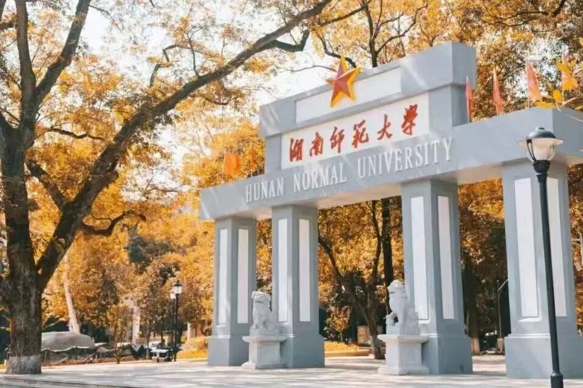

湖南师范大学生科院诚聘博士后及科研助理
原文：https://mp.weixin.qq.com/s?__biz=MzAwMzIzOTk5OQ==&mid=2247531977&idx=2&sn=3baf5952b51fdff8bde35d8ba50bb4df&chksm=9b3c0499ac4b8d8f0acfdacd75a2ae81b5407103e4dfb96d2c777e0cca7b689ca3d1bc63dcf4#rd 合集：求职/求学/招聘
01
写在前面
我们长期发布招聘/求职板块(甚至我给自己都发了求职：Biomamba求职| 国奖+4篇一作SCI)，欢迎各位老师/老板欢迎联系~我们也在招贤纳士Biomamba生信基地秋季招聘开启！其它需要求职的小伙伴也欢迎把简历发给我们[Biomamba_zhushou]，大家一起找工作/学习。用人单位也可以联系我们免费刊登招聘信息~
02
ABOUT US

容明强，湖南师范大学教授，博士生导师，湖南省杰青，湖湘高层次人才聚集工程创新人才，云南省中青年学术和技术带头人后备人才。发表学术论文20余篇，包括Proc Natl Acad Sci USA, J Proteome Res等主要学术期刊，论文总引用次数>1437。主导构建起全球最大的亿级有毒动物多肽库（http://billion-pep.com），获得7项人工智能相关软件著作权，获得40余项毒素多肽授权专利。其主导开发的多肽药物分子成功获取1项临床批文。承担国家重点研发计划及自然科学基金项目等。
湖南师范大学生命科学学院在天然活性多肽识别与开发领域，长期形成了“高水平科研团队+国家级科研平台”的协同创新优势。牵头团队深耕有毒动物（如蜘蛛、蜈蚣、蝎子等）活性多肽的挖掘与应用研究已逾三十年，处于国内外该领域的前沿地位。学院拥有动物多肽药物创制国家地方联合工程实验室，由国家发改委于2015年批准设立，其前身为具有30余年研究积淀的“蛋白质化学与蛋白质组学研究室”。近年来，该实验室持续拓展平台能力，2022年牵头组建 “多肽及小分子药物研发平台”，并参与湖南省“芙蓉实验室”建设。在国家重大科研项目方面，作为国家级科研平台，该工程实验室累计承担了包括“973 计划”项目、国家发改委双创示范基地项目、重大新药创制、国家自然科学基金等在内的国家级、省级项目100余项。研究方向：天然药物中多肽活性成分挖掘，多肽药物发现及药理药效研究。现因承担国家重点研发计划及国家自然科学基金委项目等需要，诚聘博士后及科研助理2-3名。
03
JOIN US
一、全职博士后具体岗位要求及待遇如下：
1、应聘条件(1)男女不限，身心健康；(2)博士毕业三内，一般年龄应35周岁以下，特别优秀的可适当放宽；(3)生物信息学、计算生物学、生物学，分子生物学等相关专业的博士。(4)工作态度认真负责，积极主动，具备良好的实验能力，沟通表达能力及组织协调能力，具有责任心和团队合作精神，能长期稳定工作的可优先考虑；(5)熟练掌握高通量测序数据分析流程及常用工具，熟悉 Linux 操作系统及高性能服务器使用，能够使用 Shell、Python/R/Perl 等编程语言进行数据处理和统计分析；或是熟练掌握膜片钳技术，分子生物学等实验技能。(6)特别优秀者出站后可留校任职。2、薪酬待遇博士后按照湖南师范大学《湖南师范大学师资博士后管理办法》+导师配套经费发放薪酬，在站期间享受编制内教师同等福利待遇。二、科研助理具体岗位要求及待遇如下：1、岗位职责：(1)熟练分析各种类型转录组、表观组、基因组等组学数据；(2)独立或者协助实验室成员各种组学项目的生信分析和数据挖掘工作；(3)针对实验室的科研需求，开发并完善定制化算法和分析流程。2、应聘条件：(1)男女不限，身心健康；(2)一般年龄应30周岁以下，特别优秀的可适当放宽；(3)生物信息学、计算生物学、计算机等相关专业学士或硕士，本科学历需具有 2年以上高通量测序数据分析经验；(4)工作态度认真负责，积极主动，具备良好的沟通表达能力及组织协调能力，具有责任心和团队合作精神，能长期稳定工作的可优先考虑；(5)熟练掌握高通量测序数据分析流程及常用工具，熟悉 Linux 操作系统及高性能服务器使用，能够使用 Shell、Python/R/Perl 等编程语言进行数据处理和统计分析；(6)具有三代转录组测序等学习研究及应用经验者优先。3、薪酬待遇我们将提供具有竞争力的薪酬待遇（具体面议，根据个人能力和经验从优确定），提供一流的科研环境和充足的经费支持，优秀者提供进一步深造机会。劳务派遣制用工形式，享有五险权益。

联系方式
 请将个人简历发送至邮箱：ducw2022@163.com（杜老师），邮件主题请注明“应聘职位+姓名+毕业院校”（例如：应聘科研助理+张三+XX大学）。我们将对申请材料进行初审，并尽快通知符合条件的应聘者安排面试。本招聘信息长期有效，招满为止。
请将个人简历发送至邮箱：ducw2022@163.com（杜老师），邮件主题请注明“应聘职位+姓名+毕业院校”（例如：应聘科研助理+张三+XX大学）。我们将对申请材料进行初审，并尽快通知符合条件的应聘者安排面试。本招聘信息长期有效，招满为止。